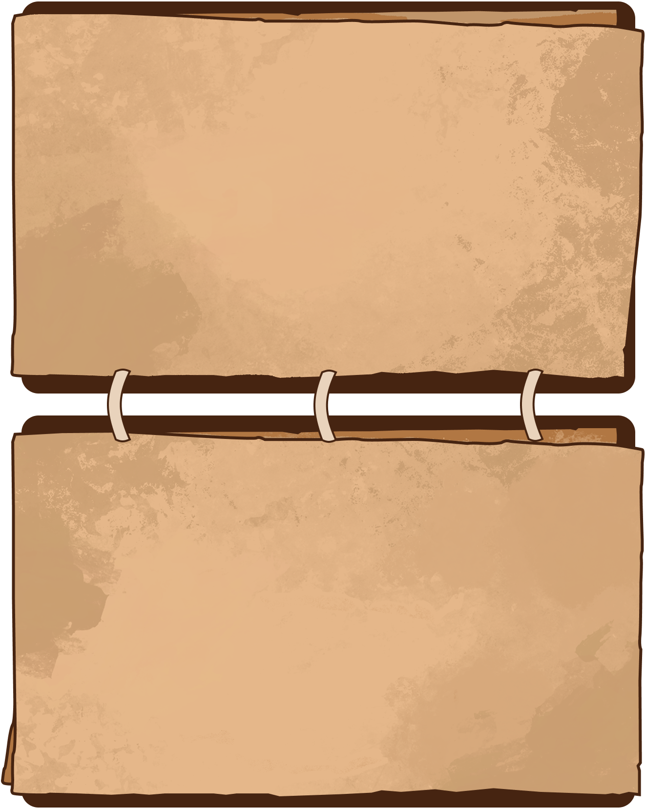
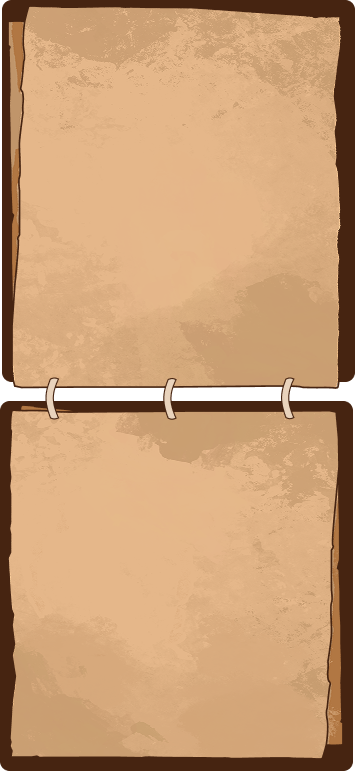
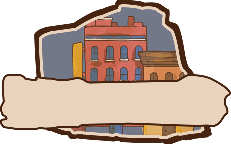
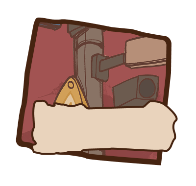
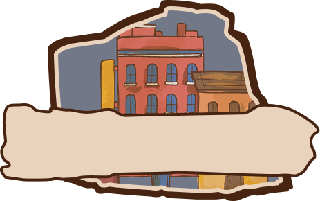
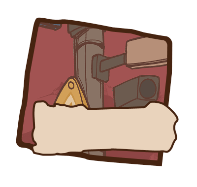
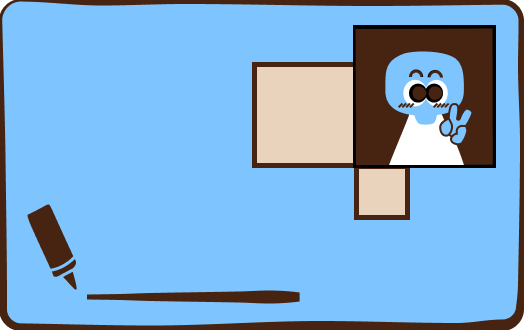
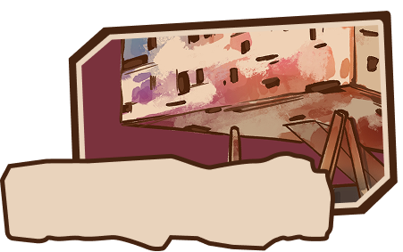
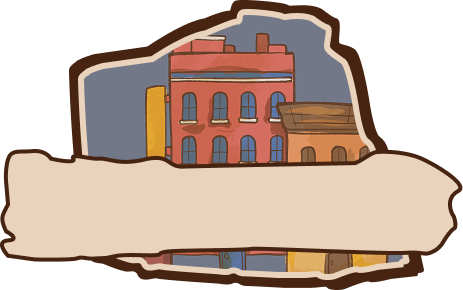
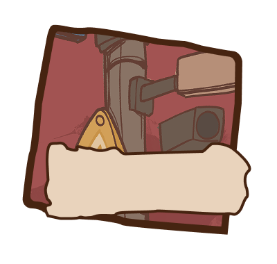

 



HOME · EXPLORER'S HANDBOOK
Welcome, brave advebturer, new to Toronto,
A new map is waiting for you to explore.

A new map is waiting for you to explore.
OCAD UNIVERSITY
100 McCaul Street
TORONTO, ONTARIO
M5T 1W1
TORONTO, ONTARIO
M5T 1W1
Here are four key lands marked for your journey. They will help you settle in and start your path with confidence.
• Campus Continent: Find your way to class in OCAD.
• Residential constraction: Solve your housing and common considerations.
• Wellness Oasis: Find your way to class in OCAD.
• Resource Land: Explore the basic resources you need to live.
For each land you explore, you will earn a specific Explorer Badge.
Enjoy your journey, brave adventurer!

• Campus Continent: Find your way to class in OCAD.
• Residential constraction: Solve your housing and common considerations.
• Wellness Oasis: Find your way to class in OCAD.
• Resource Land: Explore the basic resources you need to live.
For each land you explore, you will earn a specific Explorer Badge.
Enjoy your journey, brave adventurer!

